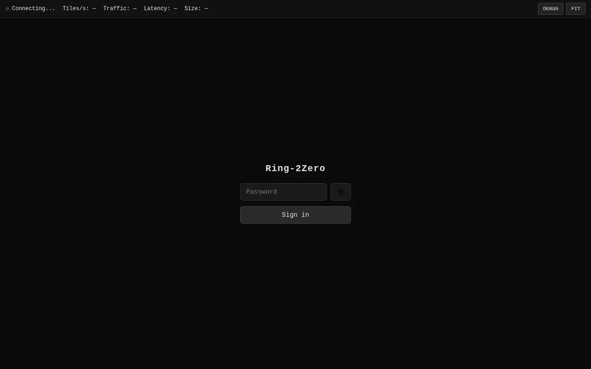
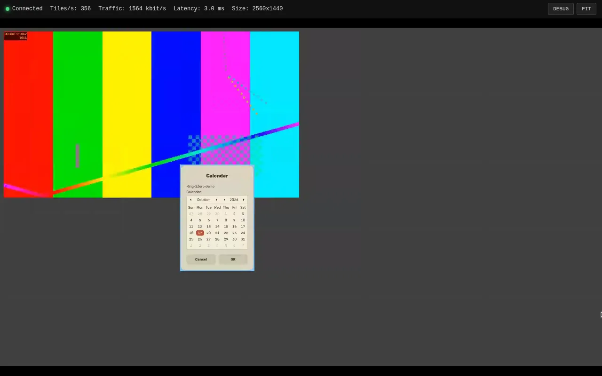
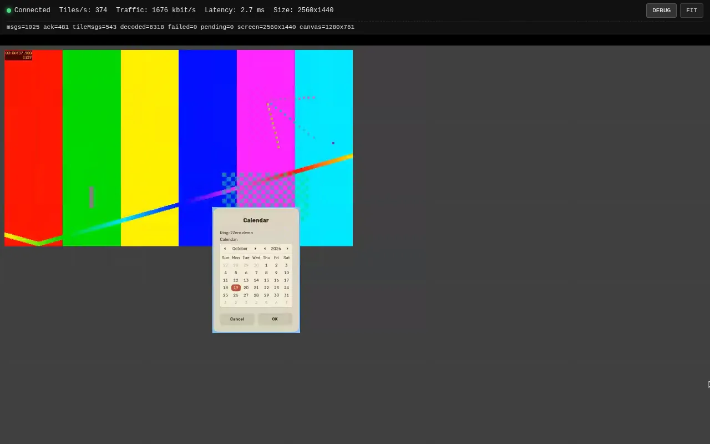

Projects /
Ring-2Zero
A Wayland screen streaming server in Rust. It streams your desktop to any browser over WebRTC: no VNC client, no X11 forwarding, just a URL.
What it is
Ring-2Zero captures a Wayland output, cuts it into a grid of tiles, hashes each tile to see what changed since the last frame, merges the changed tiles into a few rectangles, encodes those to WebP and sends them to the browser over a WebRTC DataChannel. The browser client is one HTML page embedded in the binary, so the server is the only thing you run: open its URL and you are watching your screen. There is no Node.js server and no separate static file host.
It is for anyone who wants to see, and optionally control, a Wayland desktop from a phone or another computer on a LAN, over a VPN such as Tailscale, or across the internet with their own STUN/TURN servers. The default branch of the repository is remaster; the current version is 0.400.0.


The screenshots show a throwaway nested desktop (a video and a dialog) streamed to a headless browser.
How it works
Three stages run in separate threads, joined by channels:
- Capture.
wlr-screencopyv3 with DMA-BUF and GBM, with an SHM fallback, on niri, sway and other wlroots compositors. On GNOME, KDE and X11 there is a PipeWire screencast through xdg-desktop-portal, enabled with--features pipewire_captureat build time. The backend is detected at startup. When the compositor reports damage regions, tiles outside them skip hashing. - Diff, merge, prioritise, encode. Each tile gets a cheap half-tile hash first, and only a mismatch triggers the full-tile hash (AVX2/SSE2, with scalar fallbacks); the README reports an 85-99% skip rate on ordinary desktop content. Changed tiles are merged into rectangles of up to 4x4 cells, with the merge aggressiveness tuned at startup from a WebP encode-speed benchmark of your CPU. They are then sorted by a weighted score (how often they change, how fast, how close to the centre) and encoded to WebP by a worker pool. A per-tile cache skips re-encoding of tiles that were re-selected without changing.
- Transport. Tiles are packed into messages on an unordered, reliable DataChannel. The client acknowledges each decoded batch, and a batch with no acknowledgement after 150 ms is treated as lost: every grid cell it covered is re-sent. Tile quality backs off when the DataChannel send buffer fills up and recovers gradually.
Signaling (SDP, ICE) rides a WebSocket on the same port that serves the page. The browser decodes each tile with createImageBitmap and paints it onto a canvas, and only acknowledges a batch once every tile in it has decoded. Both the WebRTC layer and the page reconnect on their own. docs/DEVELOPMENT.md in the repo has the full architecture and byte-level wire format.
Security and remote control
The server needs a token. A random one is generated and printed at each start, or you fix it with RING2ZERO_TOKEN. The client sends it as its first WebSocket message, never in the URL, so it stays out of browser history and proxy logs. It is compared in constant time, a client that sends nothing valid within 5 seconds is dropped, and a wrong token is answered after a 1 second delay with close code 4001, which lets the page tell "wrong password" from "server unreachable". TLS (wss://) is optional, through RING2ZERO_TLS_CERT and RING2ZERO_TLS_KEY, and is needed for Safari and iOS.
With --control (off by default) a CONTROL button appears and mouse, wheel and keyboard input is injected through the compositor's virtual-pointer and virtual-keyboard protocols, and clipboard sync works in both directions. On a touch screen a long-press sends a right-click and a two-finger drag scrolls.
Anyone with the token gets full keyboard and mouse access to your session, and clipboard read and write, when --control is on. The token is no substitute for network isolation: keep the port reachable only over a VPN rather than a public port-forward.

Getting it and running it
git clone https://github.com/tarilka0gg/Ring-2Zero.git
cd Ring-2Zero
./install.sh
ring-2zero # or the r2zr alias install.sh addsinstall.sh detects your package manager and installs missing libraries after asking, finds or installs a C compiler and Rust, builds a release binary, installs it as ring-2zero and adds an r2zr alias; ./install.sh --dry-run only reports what is missing. The first run benchmarks WebP encoding for a couple of seconds and caches the result (skip it with --no-adaptive). Startup prints the WebSocket address and the token; open http://localhost:9001 and paste the token once. By hand: cargo build --release, adding --features pipewire_capture for GNOME, KDE and X11. The linker is pinned to clang in .cargo/config.toml.
Configuration is by environment variables and three flags (--no-adaptive, --debug, --control); there is no config file. Useful variables:
| Variable | Purpose |
|---|---|
RING2ZERO_TOKEN | Fixed auth token instead of a random one. |
RING2ZERO_TLS_CERT / RING2ZERO_TLS_KEY | Serve wss:// instead of ws://. |
RING2ZERO_ICE_SERVERS | Comma-separated STUN/TURN servers, handed to the browser too. Needed only across NAT. |
RING2ZERO_ICE_INTERFACE | Limit ICE candidates to one interface, e.g. tailscale0. |
RING2ZERO_OUTPUT | Capture a named output on a multi-monitor machine. |
RING2ZERO_MAX_FPS | Cap the frame rates, clamped to 1-1000. |
The tile grid size, WebP quality range and priority weights are compile-time defaults in src/config.rs. The client page is in English, and in Ukrainian through the shared Simple Linux language setting, the browser language, or ?lang=uk.
Performance, with its caveat
The README publishes pipeline benchmarks measured in July 2026 (v0.277) on an i7-14650HX: about 0.13 ms per frame for static content, 0.47 ms for moderate activity, 0.63 ms for active work and 0.52 ms for a video window. These are the pipeline's own throughput ceiling, not the stream's output rate, which is capped at 60 FPS by default. The README says the diff, merge and encode stages have not changed since, while the transport and signaling layers have. Tile merging reduces tile counts by 83-99% (for example 20 627 to 247 tiles). I have not re-measured these on the current version for this page, so treat them as one machine's numbers; cargo run --release --bin frame_profiler --features bench_tools measures your own.
What was tested, and what was not
- 131 unit tests cover the diff detector, tile merger, protocol, ACK tracking, ICE-server parsing, auth and the remote-control input state machine. A Node test covers the browser client's input capture. CI runs rustfmt,
clippy -D warningsand a build with the PipeWire feature. - Remote control relies on wlroots-specific virtual-input protocols, so it does not work on compositors without them (the PipeWire backend gets the picture, not the input).
- Known issue: on at least one Android Chrome build the picture can go black or stay the wrong size after the on-screen keyboard closes. A page reload recovers it. It is still under investigation.
- The protocol changed in 0.400.0: an older cached
client.htmlwill not connect, so always use the page the binary serves.
Related
Ring-2Zero uses the same language rule as the rest of Simple Linux; see also ustan and tui-shim. Source: github.com/tarilka0gg/Ring-2Zero; the README and docs/DEVELOPMENT.md cover everything above in more depth.